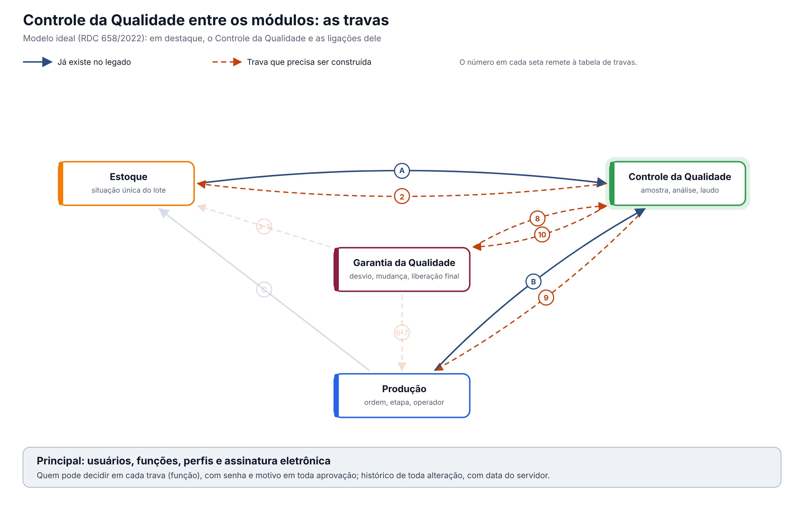

O ideal entre os módulos. O CQ decide se cada lote pode ser usado e essa decisão precisa chegar sozinha a quem usa o lote: o Estoque, que muda a situação, e a Produção, que só usa material e salas aprovados.
Esta página mostra só as travas que envolvem o Controle da Qualidade. O documento completo, com a situação única do lote e as 16 regras para todos os módulos, é "Qualidade entre os módulos: situação do lote e travas" (modelo-ideal/01-qualidade-entre-modulos.md), na Visão entre módulos. Os números das travas são os mesmos de lá. Versão 0.1, de 12/10/2026.
1. O desenho

Em destaque, o Controle da Qualidade. Setas contínuas já existem no legado; tracejadas precisam ser construídas.
2. As travas que envolvem o Controle da Qualidade
| # | Trava | Referência | O que o Controle da Qualidade faz | Com quem | No legado hoje |
|---|---|---|---|---|---|
| 1 | Situação única do lote, respeitada por todos | Arts. 157 e 189 | Mantém a decisão sobre o lote como a fonte da situação única | Estoque, Produção, Comercial | O CQ não tem situação própria do lote; o resultado não chega sozinho ao Estoque |
| 2 | O laudo do CQ muda a situação na hora | Art. 189 | Ao emitir o laudo, muda a situação do lote no mesmo instante | Estoque | A Emissão Laudo Final não muda a situação no Estoque |
| 8 | Mudança aprovada antes de implementar, com versão | Art. 8º, XII e XIII | Usa só a especificação e o método da versão vigente, criados por mudança aprovada | GQ, Controle de Documentos | Especificação sem versão; método em texto livre |
| 9 | Água e sala reprovadas bloqueiam o uso | Art. 8º, VIII | O laudo de água e de sala reprovado bloqueia o uso na Produção | Produção | O resultado não chega à Produção, que libera pelos próprios registros |
| 10 | Resultado fora de especificação abre investigação | Art. 245 | Resultado fora de especificação retém o lote e abre investigação; confirmado, vira desvio | GQ | Só pede uma observação |
3. Regras que valem para todas as travas
Valem também aqui as regras gerais do documento completo (requisitos 12 a 16): histórico de toda alteração com motivo, registro no momento da ação com hora do servidor, assinatura eletrônica nas decisões, acesso por função conferido em toda gravação e integrações que avisam quando falham.
O que a ANVISA pede: textos citados
Texto literal das normas citadas em cada tema, extraído dos arquivos da pasta Documentação/ (RDC nº 658/2022 em português e Guia nº 33/2020) por homologacao/ferramentas/citar_normas_diagnostico.py. "(...)" marca trechos omitidos. No portal, clique na referência de cada tema para ver o texto.
Tema 1 · Situação única do lote, respeitada por todos
RDC 658/2022, art. 157
Art. 157. Os materiais recebidos e os produtos acabados devem ser fisicamente ou administrativamente colocados em quarentena imediatamente após o recebimento ou processamento, até que sejam liberados para uso ou distribuição.
RDC 658/2022, art. 189
Art. 189. Somente matérias-primas que tiverem sido liberadas pelo departamento de Controle de Qualidade e que estiverem dentro de sua data de reteste devem ser utilizadas.
Tema 2 · O laudo do CQ muda a situação na hora
RDC 658/2022, art. 189
Art. 189. Somente matérias-primas que tiverem sido liberadas pelo departamento de Controle de Qualidade e que estiverem dentro de sua data de reteste devem ser utilizadas.
Tema 8 · Mudança aprovada antes de implementar, com versão
RDC 658/2022, art. 8º
Art. 8º Um Sistema da Qualidade Farmacêutica adequado à fabricação de medicamentos deve garantir que:
(...)
XII - estejam implementados procedimentos para a avaliação prospectiva de mudanças planejadas e sua aprovação antes da implementação, levando-se em consideração as notificações e aprovações regulatórias, quando necessário;
XIII - após a implementação de qualquer mudança, uma avaliação seja realizada para confirmar que os objetivos de qualidade foram alcançados e que não houve impacto prejudicial não intencional na qualidade do produto;
(...)
Tema 9 · Água e sala reprovadas bloqueiam o uso
RDC 658/2022, art. 8º
Art. 8º Um Sistema da Qualidade Farmacêutica adequado à fabricação de medicamentos deve garantir que:
(...)
VIII - um estado de controle seja estabelecido e mantido por meio do desenvolvimento e uso de sistemas eficazes de monitoramento e controle para o desempenho do processo e para a qualidade do produto;
(...)
Tema 10 · Resultado fora de especificação abre investigação
RDC 658/2022, art. 245
Art. 245. Alguns tipos de dados, tais como resultados de testes, rendimentos, controles ambientais, devem ser registrados de maneira a permitir a avaliação de tendência.
Parágrafo único. Quaisquer dados fora da tendência ou da especificação devem ser abordados e sujeitos a investigação.